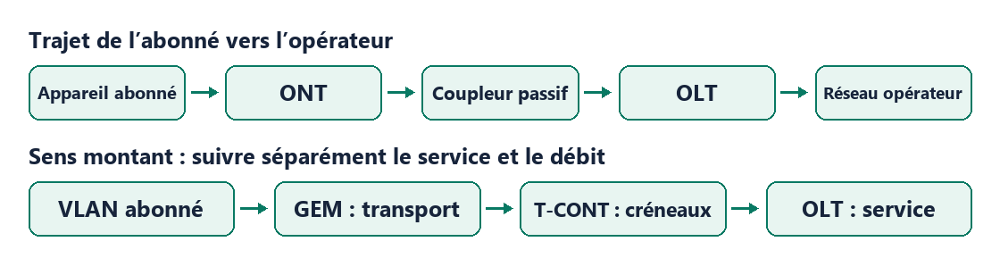

Comprendre le cours
1. Suivre le trajet de l’abonné
La boucle locale relie la box ou le terminal au réseau. En xDSL, elle utilise le cuivre. Selon le type de DSL, on répartit fréquences et débit entre les deux sens. La longueur, l’atténuation et le bruit de la paire influencent la vitesse réalisable. Le DSLAM (équipement qui regroupe les lignes DSL des abonnés) ou MSAN rassemble plusieurs lignes.
En fibre, FTTH désigne la fibre jusqu’au logement, FTTB jusqu’au bâtiment et FTTC jusqu’à un point proche des abonnés. Il peut rester un autre support sur la fin du trajet. En radio, le terminal et la station partagent un milieu radio. La couverture et les ressources disponibles influencent les performances.
Le réseau de collecte agrège les accès. À la frontière du service, la passerelle abonnés (BRAS ou BNG (passerelle qui termine et gère les accès haut débit) selon l’architecture) applique la politique d’accès et peut terminer les sessions. Sépare la couche physique, le transport Ethernet ou ATM des architectures du cours et l’attribution de l’adresse IP.
2. Comparer PPPoE et IPoE
- PPPoE transporte PPP sur Ethernet. La découverte suit PADI, PADO, PADR, PADS. Après celle-ci, LCP règle les paramètres de la liaison, un protocole comme CHAP authentifie si demandé, et IPCP négocie les paramètres IPv4.
- IPoE utilise IP sur Ethernet. L’adresse peut venir de DHCP. La découverte DHCP est locale à l’origine, et un relais peut l’acheminer jusqu’au serveur d’un autre réseau.
- Pour l’accès et les options comme l’IPTV, l’opérateur peut identifier l’abonné grâce au compte PPP, à la ligne, au port ou à des informations remontées par le relais DHCP. Le bail donne une durée et son renouvellement constitue un indice d’activité, tandis que PPP peut tester la liaison avec les messages LCP.
3. Comprendre le partage du support GPON

Dans un PON, l’OLT est l’équipement de l’opérateur et l’ONT termine la fibre chez l’abonné. Un coupleur passif répartit le signal sans alimenter un commutateur. Les directions sont séparées optiquement. En descendant, la lumière est distribuée aux branches. En montant, l’OLT attribue des créneaux de transmission aux ONT.
| Notion | Ce qu’elle règle |
|---|---|
| Ranging | Compense les écarts de temps de propagation. |
| DBA et T-CONT | Gèrent l’allocation de capacité montante avec un profil. |
| GEM | Encapsule les flux clients dans GPON et les repère par identifiant. |
| FEC | Permet de corriger certaines erreurs de transmission. |
Le partage du signal explique l’utilité de la protection du trafic descendant. Un profil de ligne peut associer ports GEM (méthode qui encapsule les données sur GPON), T-CONT (conteneur logique qui organise le trafic montant GPON) et VLAN. Le profil de service décrit les ports et capacités côté abonné. À l’OLT, la règle de service fait le lien entre les identifiants opérateur et abonné.
4. Savoir où se termine le WAN

En Route WAN, l’ONT peut terminer la session, disposer d’une adresse WAN et router depuis son réseau local. En Bridge WAN, l’ONT transporte les trames entre le réseau et le port LAN associé. C’est alors le PC ou le routeur du client qui récupère son adresse, avec PPPoE ou DHCP selon le scénario.
Un VLAN peut séparer plusieurs services sur une même fibre. Associe à chaque profil la bonne liaison physique et le bon port. Une adresse locale de gestion n’est pas l’adresse WAN négociée par le service.
5. Comparer les accès et transporter plusieurs services
Dans FTTH, la fibre atteint le logement. Dans FTTB, elle atteint le bâtiment et une autre liaison peut continuer jusqu’à l’abonné. Dans FTTC, le dernier tronçon part d’un point plus loin du logement. Le cours compare aussi un accès xDSL sur paire téléphonique, un réseau coaxial et un accès hertzien. Pour expliquer une différence, commence par nommer le dernier support et l’équipement qui le termine, DSLAM pour le DSL ou OLT et ONT pour le PON.
Le ranging mesure le délai entre chaque ONT et l’OLT afin que, malgré des distances différentes, les salves montantes arrivent chacune dans le bon créneau. Le DBA (attribution dynamique du débit montant sur un réseau optique partagé) distribue ensuite la capacité selon les profils et la demande. En descendant, les ONT partagent le support optique. Le cours traite le filtrage des flux par identifiant, le chiffrement pour la confidentialité et la FEC pour corriger des erreurs avec des octets supplémentaires. Ce sont trois mécanismes distincts.
Le triple play transporte Internet, télévision et voix. Associe les flux aux VLAN et aux politiques de priorité demandés. QinQ ajoute un tag opérateur autour du tag client pour transporter les VLAN d’un client sans renuméroter ses réseaux. Compare les tags avant et après le point d’entrée de l’opérateur. Dans le TP GPON, la traduction de VLAN est une autre action qui change l’identifiant associé au service.
Dimensionner les T-CONT pour le TD Huawei
Un flux se reconnaît par son service et son VLAN. Le port GEM permet de le transporter dans le PON. Le T-CONT représente un groupe de trafic pour l’allocation montante. Plusieurs ports GEM peuvent partager un T-CONT. Le nombre de services ne fixe donc pas à lui seul le nombre de T-CONT.
| Type (poly p. 37) | Ce que l’OLT réserve ou garantit | Plafond |
|---|---|---|
| 1 | Débit fixe X | Z = X |
| 2 | Débit garanti Y selon le besoin | Z = Y |
| 3 | Débit garanti Y et surplus éventuel | Z > Y |
| 4 | Best effort, sans part fixe ni garantie | Z |
| 5 | Combinaison de parts fixe X et garantie Y, avec supplément possible | Z ≥ X + Y |
Dans le TD, commence par identifier les garanties attendues. Une proposition explicable sépare la voix à débit fixe du trafic Internet en rafales. Pour la TV, sépare les flux reçus des échanges montants du décodeur. Choisis un T-CONT de type 2 ou 3 si ces échanges doivent disposer d’une garantie. Si les échanges restent en best effort, ils peuvent partager le profil Internet. Indique le débit garanti et le plafond seulement après avoir défini le besoin. Le sujet laisse ces valeurs à justifier.
Partie 3 du TP ONT · Donner une sortie IP au BRAS
Commence par vérifier la session PPPoE et l’adresse IP attribuée à l’ONT. Sur la machine BRAS du labo, repère le côté où arrivent les clients PPP et l’interface de sortie qui a une route vers le réseau de l’IUT. Active le transfert IP, autorise dans le pare-feu l’aller et les réponses, puis applique la traduction de source sur l’interface de sortie pour la plage privée attribuée. Vérifie d’abord un ping vers le BRAS, puis vers une adresse extérieure à la plage privée. Compare les adresses source observées des deux côtés. Une session ouverte avec un premier ping réussi mais sans sortie oriente le diagnostic vers le routage ou le NAT.
Que change le mode pont sur la box du TD ?
Imagine un service fourni sur un réseau virtuel dédié par l’opérateur. En mode routé, la box termine la connexion de ce service et achemine le trafic entre le réseau local et l’opérateur. En mode pont, elle transporte les trames vers l’équipement raccordé qui prend en charge la connexion prévue.
Sur le schéma, marque d’abord l’équipement qui doit obtenir l’adresse du service. Relève ensuite le port local et l’identifiant du réseau virtuel qui l’y relient. Cette lecture donne un sens aux champs de la box avant de choisir leurs valeurs.
Sigles et acronymes
- ADSL · Asymmetric Digital Subscriber Line
- Accès DSL dont les débits montant et descendant sont différents.
Exemple. La box reçoit plus vite qu’elle n’envoie sur cette ligne cuivre. - ATM · Asynchronous Transfer Mode
- Transport en cellules de taille fixe.
Exemple. Un ancien équipement DSL peut transporter les données sous forme de cellules ATM. - BNG · Broadband Network Gateway
- Passerelle qui termine et gère les accès haut débit.
Exemple. La box établit sa session côté opérateur et la passerelle applique les paramètres d’abonné. - BRAS · Broadband Remote Access Server
- Équipement qui agrège et termine des sessions d’accès haut débit.
Exemple. Un réseau DSL peut y terminer les sessions PPP des box. - CHAP · Challenge Handshake Authentication Protocol
- Authentification PPP par défi-réponse.
Exemple. La box répond à un défi pour prouver qu’elle connaît le secret. - DBA · Dynamic Bandwidth Allocation
- Attribution dynamique du débit montant sur un réseau optique partagé.
Exemple. L’OLT répartit les créneaux montants selon les besoins des abonnés. - DHCP · Dynamic Host Configuration Protocol
- Distribution automatique de la configuration IP.
Exemple. Un PC obtient une adresse, un masque, une passerelle et souvent un serveur DNS. - DSL · Digital Subscriber Line
- Accès haut débit par paire de cuivre.
Exemple. Une ligne ADSL utilise la paire téléphonique pour le trafic Internet. - DSLAM · Digital Subscriber Line Access Multiplexer
- Équipement qui regroupe les lignes DSL des abonnés.
Exemple. Plusieurs lignes en cuivre arrivent au DSLAM de l’opérateur. - FEC · Forward Error Correction
- Correction d’erreurs à partir de données redondantes.
Exemple. Un récepteur optique peut corriger certaines erreurs grâce aux bits ajoutés. - FTTB · Fiber To The Building
- Fibre jusqu’au bâtiment.
Exemple. La montée entre le local technique et le logement peut utiliser un autre support. - FTTC · Fiber To The Cabinet
- Fibre jusqu’à une armoire de rue.
Exemple. Le dernier tronçon vers le logement reste en cuivre dans ce type d’accès. - FTTH · Fiber To The Home
- Fibre optique jusque chez l’abonné.
Exemple. La fibre arrive jusqu’au boîtier optique du logement. - GEM · GPON Encapsulation Method
- Méthode qui encapsule les données sur GPON.
Exemple. Une trame Ethernet est transportée dans des unités GEM. - GPON · Gigabit-capable Passive Optical Network
- Réseau d’accès optique passif partagé.
Exemple. Un OLT dessert plusieurs logements via un coupleur passif. - IPCP · IP Control Protocol
- Négociation des paramètres IPv4 sur une session PPP.
Exemple. La box négocie l’adresse IPv4 à utiliser sur la liaison. - IPTV · Internet Protocol Television
- Diffusion de télévision sur IP.
Exemple. La box reçoit le flux vidéo via le réseau d’accès. - LAN · Local Area Network
- Réseau local.
Exemple. Le réseau des PC de la salle est un LAN. - LCP · Link Control Protocol
- Ouverture et réglage d’une liaison PPP.
Exemple. Les deux extrémités échangent des options avant de configurer IP. - NRO · Nœud de raccordement optique
- Site qui concentre les accès optiques d’une zone.
Exemple. Les lignes fibre de plusieurs secteurs remontent vers un NRO. - OLT · Optical Line Terminal
- Équipement optique côté opérateur.
Exemple. L’OLT coordonne les transmissions des différents abonnés du réseau. - ONT · Optical Network Terminal
- Terminal optique côté abonné.
Exemple. Le boîtier chez toi termine la fibre et fournit une liaison Ethernet à la box. - PON · Passive Optical Network
- Réseau optique partagé avec des coupleurs passifs.
Exemple. Une fibre venant du central est répartie vers plusieurs abonnés. - PPP · Point-to-Point Protocol
- Protocole de liaison entre deux équipements.
Exemple. Chez un fournisseur d’accès, la box peut établir une session PPP. - RADIUS · Remote Authentication Dial-In User Service
- Protocole de contrôle d’accès réseau.
Exemple. Une borne demande au serveur RADIUS si le compte peut rejoindre le Wi-Fi. - T-CONT · Transmission Container
- Conteneur logique qui organise le trafic montant GPON.
Exemple. L’OLT attribue des créneaux à un conteneur associé au trafic de l’abonné. - VLAN · Virtual Local Area Network
- Réseau local logique séparé sur une infrastructure partagée.
Exemple. Un switch sépare les postes du personnel et ceux des invités dans deux VLAN. - WAN · Wide Area Network
- Réseau étendu qui relie des sites ou fournit leur sortie.
Exemple. Sur une box, le port WAN mène au réseau de l’opérateur.
Du cours aux TD et TP
Support croisé · Poly Technologies d’accès, TD PPPoE/IPoE et Huawei, TP GPON parties OLT et ONT.
| Notion du cours | Où la travailler | Ce que tu dois savoir refaire |
|---|---|---|
| Supports et équipements | Poly p. 2–16 et 22–46, TD PPPoE/IPoE | Nommer la boucle locale et la collecte. Suivre DSLAM/NRA ou ONT/OLT/NRO selon le support. |
| Choix PPPoE ou IPoE | Poly p. 17–21, TD PPPoE/IPoE et TP ONT | Identifier découverte, négociation, authentification et paramétrage IP. En IPoE, expliquer le relais DHCP et le rôle possible du port ou du VLAN. |
| Transmission montante, ranging, DBA, T-CONT et GEM | Poly p. 29–42, TD Huawei et TP OLT | Décrire pourquoi les salves ne se chevauchent pas. Suivre un service du profil d’abonné à son port GEM et distinguer débit fixe, garanti et maximal. |
| Triple play, VLAN et priorité | Poly p. 47–59, TD Huawei et TP OLT | Séparer Internet, TV et voix, puis justifier chaque VLAN, priorité et association à un port LAN. Distinguer QinQ de la translation. |
| Mode WAN et diagnostic | TP ONT, parties 1 à 3 | Dire quel matériel termine PPPoE, confirmer l’adresse WAN et distinguer un défaut optique d’un problème VLAN, session ou routage. |
Questions TD & TP
Les versions téléchargeables des deux TP GPON masquent les identifiants des équipements. Utilise les sujets de ton dossier de cours pour la connexion au labo.
TD · Expliquer les phases de l’accès abonné
Énoncé. Identifier chaque équipement, comparer les phases PPPoE et IPoE, et expliquer comment le réseau attribue et maintient l’adresse.
- Sur la figure DSL, identifie la box côté abonné, le MSAN ou DSLAM qui agrège les lignes et le BRAS côté réseau. Place ensuite RADIUS pour les informations d’identité et le serveur DHCP pour l’attribution quand elle est utilisée.
- En PPPoE, trace les quatre étapes : découverte de la session, réglage de la liaison PPP, authentification, négociation réseau. Dans une capture, distingue PADS, qui fixe la session, du message IPCP qui négocie l’adresse IPv4.
- En IPoE, trace
DISCOVER → OFFER → REQUEST → ACK. Le premier message est une diffusion locale, donc dessine le relais si le serveur n’est pas sur ce réseau. Indique l’identifiant de ligne ou du port si l’opérateur s’appuie dessus pour donner un service distinct.
TD Huawei · Choisir les paramètres WAN par service
Énoncé. Préparer des interfaces séparées pour Internet, IPTV sur LAN4 et ToIP.
- Pour chaque interface, relève type de service, mode route ou bridge, VLAN, priorité et liaison aux ports. En IPoE, l’adresse peut être dynamique (DHCP) ou fixe. Avec une IP fixe, prépare adresse, masque, passerelle et DNS si nécessaire. En PPPoE, la session utilise les paramètres d’authentification fournis.
- Internet peut être routé pour les postes du réseau local. Pour une IPTV qui attend un accès direct, la variante bridge associe son VLAN au port LAN4 côté décodeur. Pour la téléphonie prise en charge par la box, associe le service voix aux paramètres opérateur et à la fonction de téléphonie. Les identifiants de VLAN et priorités sont ceux du scénario, à vérifier dans l’énoncé ou la maquette.
- Vérifie dans l’état WAN quel profil est actif et quel port a le service. Teste un flux de chaque type plutôt que déduire le fonctionnement de tous les services d’un ping Internet.
TP GPON côté OLT · Préparer les profils et confirmer l’ONT
Énoncé. Relier le DBA, le T-CONT, le GEM et l’ONT détecté sur l’OLT.
dba-profile add profile-name ftth_dba_2 type4 max 20480
ont-lineprofile gpon profile-name ftth2
tcont 6 dba-profile-name ftth_dba_2
gem add 15 eth tcont 6
gem mapping 15 1 vlan 1002
commit- Relève la position de la carte, le port de fibre, puis l’état optique. À la fin de la création du profil, vérifie le DBA dans
display dba-profile. Le profil de type 4 est une allocation en meilleur effort, bornée ici par le maximum configuré. - Le T-CONT 6 utilise le DBA créé. Le GEM 15 lui est associé et le VLAN abonné 1002 est envoyé dans ce GEM. Prépare aussi le profil de service du sujet et valide chacun avec
commit. - Dans
interface gpon 0/0, utilisedisplay ont autofind 0. Identifie ton numéro de série sur le matériel et confirme l’ONT avec les deux profils, sur l’identifiant 2 demandé. Vérifie avecdisplay ont info 0 all:active,online,normaletmatchsont les états recherchés.
TP GPON côté OLT · Vérifier la traduction de VLAN
Énoncé. Transporter le VLAN abonné 1002 via le port GEM 15 et le remettre sur le VLAN opérateur 100.
- Prépare la table de trafic du sujet. Vérifie le débit d’information engagé (CIR) et la priorité dans
display traffic table ip. - Dans le
service-port, vérifie ensemble : VLAN de sortie 100, port GPON0/0/0, ONT 2, GEM 15, VLAN utilisateur 1002 et modetag-transform translate. Utilise le profil de trafic dans les directions demandées. - Génère un trafic de test depuis l’ONT. Vérifie le VLAN sur le point de capture autorisé côté réseau. Une liaison optique en ligne confirme la connectivité GPON. Le test Ethernet confirme le chemin du service.
TP GPON côté ONT · Comparer les trois profils WAN
Énoncé. Observer PPPoE Route WAN, PPPoE Bridge WAN et IPoE Bridge WAN avec la préconfiguration VLAN 1001 de l’ONT 1.
- Après préparation de la maquette, relève dans Status → Optical Information la puissance réellement affichée et son unité. Vérifie l’état de liaison avant de lancer des essais réseau.
- Prépare le serveur PPPoE Linux sur l’interface du labo et la configuration CHAP avec le compte de test. Fixe l’IP du serveur et le début de plage selon le plan du groupe. Lance Wireshark avant d’appliquer le profil WAN.
- En Route WAN, active PPPoE sur la box et associe LAN1, avec l’étiquette 1001. Vérifie l’adresse WAN de la box et compare à l’adresse LAN du PC. Repère la liaison PPP et le ping dans la capture côté serveur.
- En Bridge WAN PPPoE, lie le profil au port LAN2 et fais ouvrir PPPoE par le PC. Vérifie que le PC devient le point de terminaison. En Bridge WAN IPoE, passe le PC sur DHCP et lis les quatre échanges d’attribution au lieu du chronogramme PPP.
- Pour chaque essai, note qui reçoit l’adresse, le VLAN visible côté réseau et l’état final du ping. Si rien n’apparaît, remonte du signal à l’enregistrement ONT, puis au profil du port et au VLAN, avant de corriger l’authentification ou DHCP.